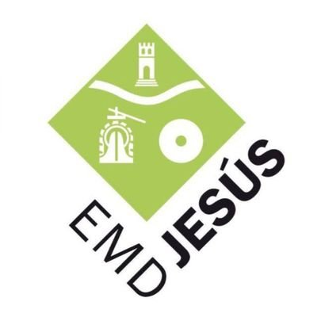
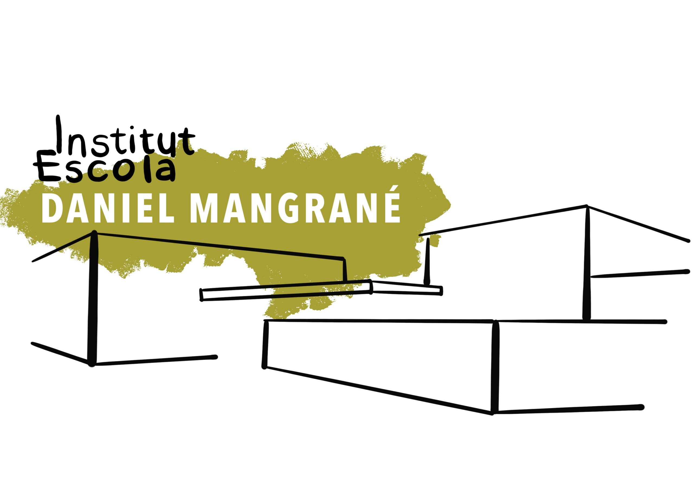

El tret de sortida oficial de l'associació al territori, acollint públic de totes les edats, representants institucionals i col·laboradors clau.
El passat 13 de desembre de 2025 vam dur a terme la presentació oficial d'ADECTE a l'EMD de Jesús. L'acte va comptar amb una gran acollida i un públic intergeneracional de totes les edats, a més de la presència destacada de representants de la pròpia EMD i de l'Observatori de l'Ebre.
Durant l'esdeveniment vam explicar els motius que van impulsar el naixement de l'associació: la necessitat d'apropar la ciència aeroespacial i la divulgació científica al nostre territori. Un dels moments més especials de la presentació va ser l'anunci en primícia de la posada en marxa de la segona edició del Projecte Landerer, revelant públicament la data exacta del seu llançament.
Un cop finalitzada la presentació oficial, els protagonistes van ser els alumnes de l'IE Daniel Mangrané, que van realitzar diversos experiments científics relacionats amb l'espai. Els assistents van poder interactuar i comprendre de primera mà el funcionament del buit, les òrbites planetàries, els eclipsis i la gravetat, d'entre d'altres fenòmens.
Imatges destacades de la presentació i dels tallers experimentals.
Volem agrair especialment el suport rebut per fer possible aquesta jornada inaugural:

